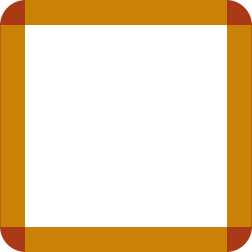

Ce sujet revient assez souvent dans les forums, et pour cause : beaucoup se demandent comment faire de jolis cadres avec des coins arrondis et des images et ce, sans utiliser de tableaux.
La réponse ? Des div avec un soupçon de CSS par dessus, et le tour est joué !
Et en plus, c'est sémantiquement meilleur que des tableaux, alors on va pas s'en priver. :p
On souhaite ici obtenir quelque chose dans ce style :

Tout d'abord, il nous faut un peu de Xhtml pour le contenu.
Explication de la méthode
Pour faire des cadres arrondis, il nous faut au moins 9 cases (ici, des <div>) : une pour chaque coin, une pour les 4 bordures, et une pour le contenu.
Comment y arriver ?
Plusieurs méthodes s'offrent à vous :
soit faire trois lignes de trois cases,
soit placer les neufs blocs et se servir du CSS pour les renvois à la ligne.
J'expliquerai ici la seconde méthode, qui nous permet de faire des économies de <div>, ce qui n'est pas négligeable si vous avez plusieurs cadres (blocs de news, par exemple).
Le code pas à pas
Commençons par un document vierge :
<?xml version="1.0" encoding="UTF-8"?> <!-- L'encodage dépend de vous, moi je fonctionne en UTF8 mais beaucoup préfèreront l'iso 8859-1 -->
<!DOCTYPE html PUBLIC "-//W3C//DTD XHTML 1.1//EN" "http://www.w3.org/TR/xhtml11/DTD/xhtml11.dtd">
<html xmlns="http://www.w3.org/1999/xhtml" xml:lang="fr" >
<head>
<title>Cadres arrondis</title>
<style type="text/css">
</style>
</head>
<body>
</body>
</html>
Ensuite, on va définir tous les blocs dont on a besoin. Je vais regrouper tous ces blocs dans un autre, ce qui permet, par exemple dans un site web, de positionner le bloc entier :) .
Insérez entre <body> et </body>:
<div class="cadre_arrondi">
<div class="hg"></div>
<div class="haut"></div>
<div class="hd"></div>
<div class="gauche"></div>
<div class="contenu">Ici, c'est le contenu du cadre !</div>
<div class="droite"></div>
<div class="bg"></div>
<div class="bas"></div>
<div class="bd"></div>
</div>
Enregistrez la page et ouvrez-la avec votre navigateur préféré (Firefox, donc :p ).
Vous obtiendrez quelque chose du genre :
Ici, c'est le contenu du cadre !
Magnifique, n'est-ce pas ?
Bon, ben on en a déjà fini avec le Xhtml. Évidemment, vous pouvez placer du texte dans les blocs mais ça, ça dépend de vous !
Bien sûr, si vous regardez votre page maintenant, ça va être moche. Très moche.
Pour remédier à cela, on va commencer par ordonner un peu les blocs et les rendre flottants. Pour cela on utilise la propriété float: left;. Mais il nous faut aussi utiliser clear, qui permet en quelque sorte de dire à un bloc : "ne fais pas attention aux flottants, positionne-toi normalement (donc, en dessous)".
On donne cette propriété uniquement aux blocs de gauche (.hg, .gauche, .bg).
On va donc rajouter dans notre CSS :
.cadre_arrondi div { float: left; } /* S'apllique à tous les divs de .cadre_arrondi */
.hg, .gauche, .bg { clear: left; } /* Pour passer outre le float des blocs précédents */
Ensuite, il nous faut des images pour les coins. Bon, moi je les ai fait rapidement, donc j'ai ça :
On utilise la propriété background-image pour les mettre en fond, et on en profite pour mettre une couleur de fond aux blocs .haut, .bas, .gauche et .droite :
Vous pouvez aussi bien évidemment mettre des images de fond dans tous les blocs, c'est la même méthode que pour les coins.
En tous cas, maintenant, vous avez la méthode !
Voilà pour les bases. Vous noterez que c'est quand même assez facile : je vous laisse le soin de faire de jolies images et des cadres qui déchirent tout, c'est à la portée de tous, la méthode restant tout le temps la même que celle expliquée ici.